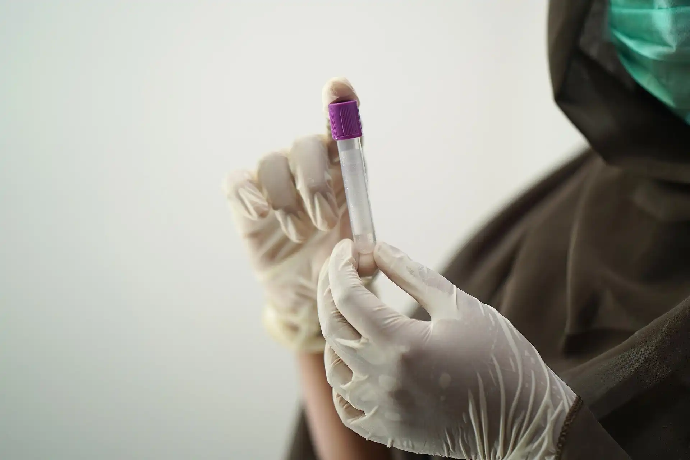

Why live with a damaged gut microbiome when you could fix it?
We have found that most individuals have a damaged Foundation Guild™ in their
gut microbiome. If left unsupported, the pathogens can overtake the gut ecosystem.
We have developed a three-step program to analyze, repair, and preserve your
Foundation Guild™.

Step 1: Analyze your Existing Foundation Guild™
Our Foundation Guild™ Analysis (FG-A) can identify the
Foundation Guild™ bacteria in every person's gut, no matter how small of a percentage they are in
the beginning.
The FG-A fecal sample collection kit is easy to use. Follow the simple instructions in the kit and mail the sample back to us. We will analyze the sample and send you a report about your Foundation Guild™.
The FG-A fecal sample collection kit is easy to use. Follow the simple instructions in the kit and mail the sample back to us. We will analyze the sample and send you a report about your Foundation Guild™.
Step 2: Repair your Damaged Foundation Guild™
Our Foundation Guild™ Microbiome Dietary Supplement (MDS163) contains the
necessary nutrients and protectants to support the Foundation Guild™ bacteria in healthy
individuals. Take three scoops each day, and you will soon notice the difference.
Mix the powder in water and drink it directly, or add it into your favorite smoothie blend. The formula is so versatile that you can even make bread, muffins, waffles, or pancakes with it!
Mix the powder in water and drink it directly, or add it into your favorite smoothie blend. The formula is so versatile that you can even make bread, muffins, waffles, or pancakes with it!
Step 3: Preserve your Recovered Foundation Guild™
Just like having a back-up copy of your most important files, you should also preserve a
copy
of your Foundation Guild™.
Once we confirm that your Foundation Guild™ has recovered, you will receive a Foundation Guild™ Bio-banking (FG-B) kit to collect another sample. As soon as your sample arrives to our lab, we will isolate your Foundation Guild™ bacteria and put them into long term storage. If, in the future, your Foundation Guild™ is lost, we can help you regain your original Foundation Guild™
Once we confirm that your Foundation Guild™ has recovered, you will receive a Foundation Guild™ Bio-banking (FG-B) kit to collect another sample. As soon as your sample arrives to our lab, we will isolate your Foundation Guild™ bacteria and put them into long term storage. If, in the future, your Foundation Guild™ is lost, we can help you regain your original Foundation Guild™